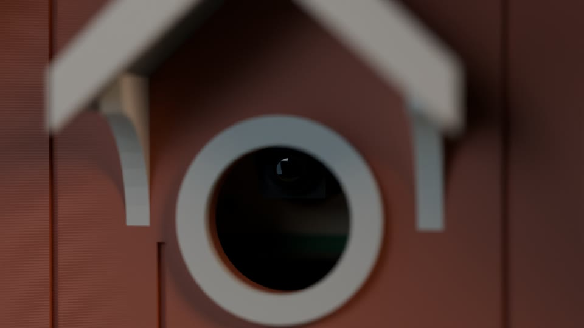
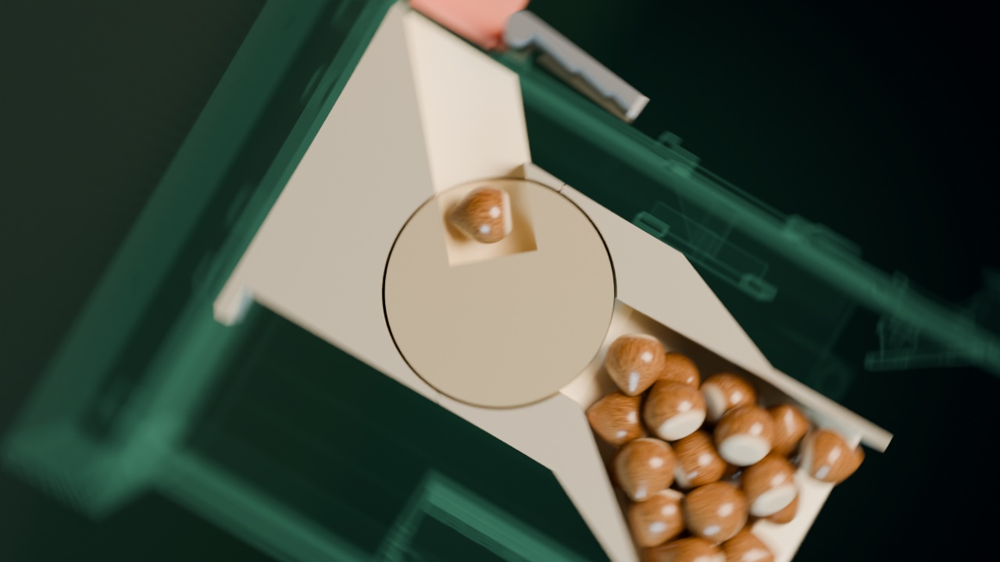
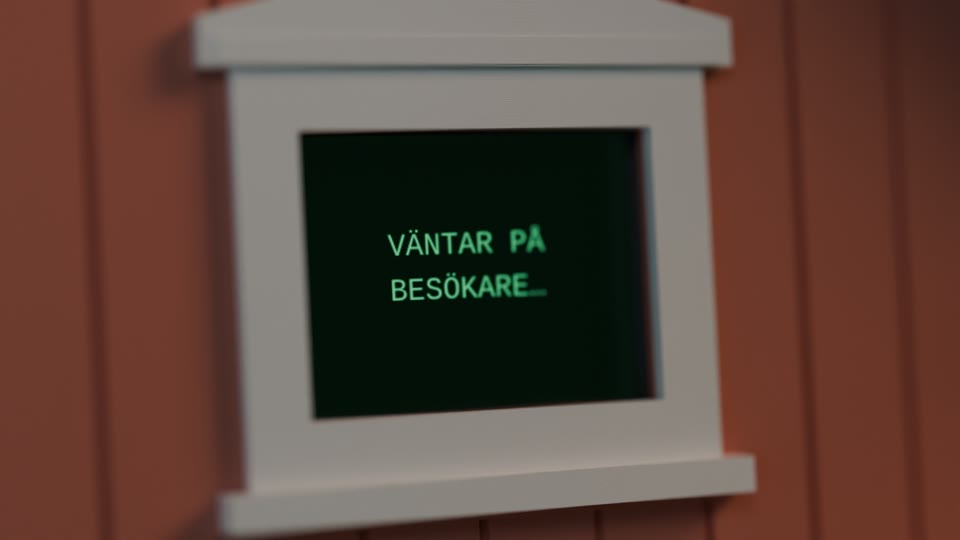
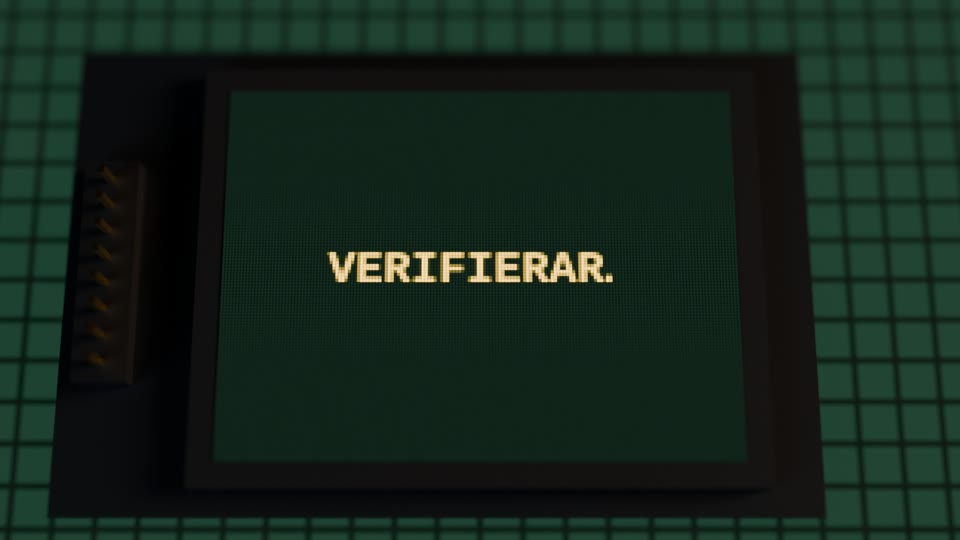
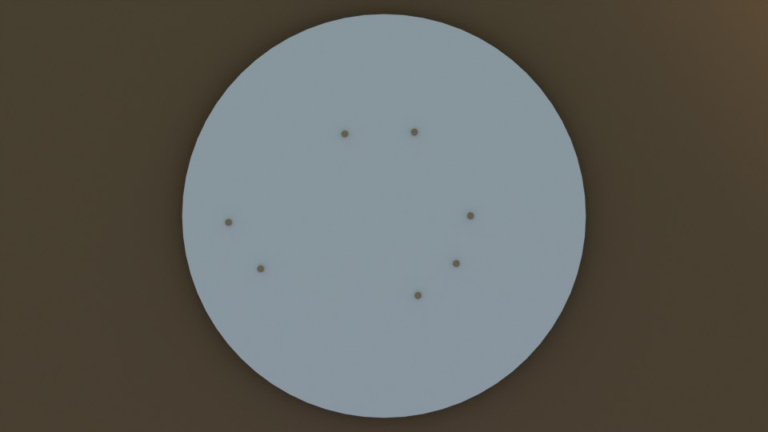
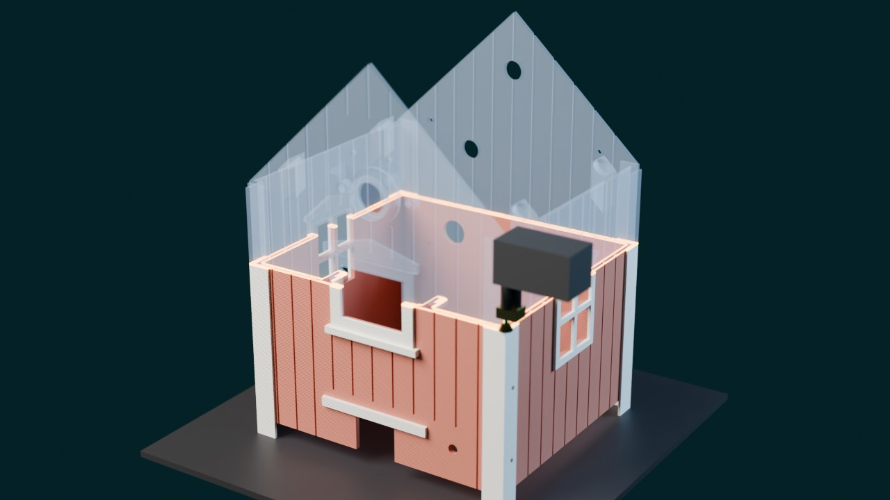
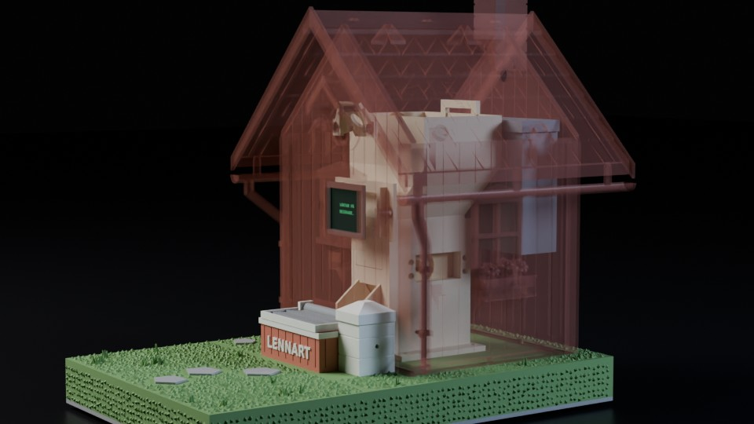

En helt orimlig mängd teknik, redovisad med fullt allvar, för att en ekorre ska få äta sin nöt i fred.
Hela filmen i ordning som en enda film. Klipp som inte är producerade än visas som gråtonade stillbilder i sin planerade längd, med gul text. Numret nere till vänster är klippets nummer i tavlan.
Filmen börjar tätt inpå en liten skärm där det står VÄNTAR PÅ BESÖKARE…, medan rösten lugnt presenterar "ett helt vanligt autonomt säkerhetssystem".
Sedan får varje fackord en egen bild. Kameran åker in i linsen bakom gluggen för åtkomstkontrollen. För precisionsdoseringen syns bara mekaniken, i ett hus av mörkt glas: luckan öppnas och hjulet vrider fram en hasselnöt. De fyrtioåtta delarna ligger utlagda på ett golv, omonterade. Huset som helhet visas aldrig. Det avslöjas först när Claude har ritat det i del 3.
Tillbaka till skärmen, som nu visar VERIFIERAR…. Två sekunders tystnad. Klipp till titeln: det vaktar nötter.
Orden är dina egna ur den första inspelningen. Öppningen är 19,5 sekunder med den genererade rösten. Frågan den lämnar obesvarad, vem som stod framför kameran, får sitt svar i akt 6.




Ordningen är ändrad så att tittaren får veta hur matstationen är tänkt att fungera innan bygget börjar. Efter historien om Lennart berättas problemet och planen i samma 3D-stil som resten: en mörk scen med ett lerhus som växer upp ur golvet, utstansade kartongfigurer och ett moln som svarar ja eller nej. Lerhuset får sedan färg utan klipp. Monteringen är nästan utan röst, eftersom funktionen redan är förklarad. Finalen visar samma förlopp i verkligheten, utan ett ord. Den filmas när huset är utskrivet.
Ett makroklipp per fackord, sedan paus, sedan nötterna.
Hur han dök upp, namnet, nötterna. Varmt och kort.
Fåglarna länsar buffén. Sedan idén: kameran, frågan till molnet, nej till fågeln och ja till Lennart.
Skissen blir lera, blir färdig stuga, i en enda kamerabana.
Rösten räknar upp delarna och varje del landar på sitt ord.
Lager för lager. Kan filmas på riktigt när du skriver ut.
Filmens visuella topp. Två repliker, resten musik och klick.
Fågeln nekas och Lennart släpps in, i verkligheten. Platshållare tills huset är utskrivet.
Märkningen nere till höger i varje ruta visar hur klippet bör produceras: 3D är Blender från modellen, Autentiskt är riktigt filmat material, Blandat är riktigt material med 3D eller grafik ovanpå. Grön text är övergången till nästa klipp.

Det tomma fatet sett rakt uppifrån blir en ritad cirkel, som blir den runda gluggen i gaveln, som blir filamentrullen, som blir doseringshjulet, som till sist är nöten i Lennarts tassar. Fem övergångar bygger på samma form i samma läge i bild. Ingen kommer att kunna sätta ord på det, men filmen känns som gjuten i ett stycke.

I slicern stiger ett glödande lagerplan genom den grå modellen. Allt under planet blir röd plast med riktiga lagerlinjer, allt ovanför förblir digitalt. Mitt i rörelsen glider munstycket in och rider på planet, och vi är hos skrivaren utan att ha klippt. Det är övergången digitalt till fysiskt, gjord som en enda rörelse.

Vid ACCESS GRANTED åker kameran in genom skärmen. Huset blir genomskinligt och vi följer en nöt från magasinet, ner i doseringshjulet som vrider sina 130 grader, ut i skålen där luckan fälls upp 95 grader, och ut i solen där en riktig ekorre väntar. Ett oavbrutet tagning från 3D till verklighet, och förklaringen av hela mekaniken på sex sekunder.
Modellen är redan uppdelad i fem grupper och varje del är ett eget objekt med namn. Det gör att monteringen kan animeras exakt som huset är byggt, utan att något behöver hittas på. Ordningen nedan följer grupperna i delar.json.
| Tid | Delar | Rörelse |
|---|---|---|
| 2:09 | Alla 48 | Sprängskiss. Långsam omloppsbana, delarna andas svagt. |
| 2:13 | fotter, bottenplatta, framgard_platta, bas, framgard, grasmatta, framgard_gras, stenar | Staplas nerifrån och upp. Gräset sist. |
| 2:16 | kropp_packning, kropp_sockel, kropp, kropp_vit, fonsterrutor, blomlador med växter, stuprör | Kroppen sänks på packningen. Knutar, fönster och blomlådor snäpper på utifrån. |
| 2:19 | doserhus, doserhjul, notmagasin | Kameran går in genom väggen. Hjulet träs på sin axel, magasinet ovanpå. |
| 2:21 | kamerafaste, skarmklamma, skarmram, solskydd | Monteras mot framväggen inifrån och utifrån. Skärmen är fortfarande svart. |
| 2:23 | elektroniklada, elpackning, monteringsplatta, genomforingar, ellock | Skjuts in bakifrån. Locket sist. |
| 2:24 | skal, skal_vit, lucka, lucka_vit, servopackning, servokapa | Skålen med LENNART-skylten dockar i framsidan. Luckan provöppnas en gång (−95°). |
| 2:25 | takpackning, tak_v, tak_h, takrannor, nockkilar, skorsten, skorsten_krage | Takhalvorna möts i nocken. Skorstenen landar sist. |
| 2:27 | Skärmen | Tänds: VÄNTAR PÅ BESÖKARE… |
Färgerna ovan är hämtade ur modellen och skärmbilderna. De ändras inte.
Det här är texten du spelar in. Kallöppningen och del 1 följer dina egna ord, med de ändringar du har gjort. Rubriken ovanför varje replik säger vilket klipp som visas medan den sägs. Bilden klipps efter din inspelning, så exakta tider spelar ingen roll.
Två saker stäms av mot verkligheten när huset är utskrivet: att utskriften tog några dagar, och att finalen går till som planen säger. Den genererade Cedar-rösten används bara som arbetsunderlag.
| Del | Metod | Varför |
|---|---|---|
| Kallöppning, akt 2, 5 | Riktig 3D i Blender (Cycles) från GLB-filen | Kräver exakt samma hus i varje bild. AI-video kan inte hålla 48 delar konsekventa. |
| Akt 3 | 3D, när elektroniken finns som modeller. Annars filmat uppifrån på svart tyg. | En riktig knolling-bild av de riktiga delarna är både snabbare och ärligare än gissade modeller. |
| Akt 4 | Autentisk makrofilm från skrivaren, med 3D-övergången in och ut | Riktig plast som läggs ut går inte att slå. 3D sköter bara lagerplanet och matchningen. |
| Akt 1 och 6 | Autentiskt material på Lennart och huset, med 3D-grafik ovanpå | Lennart är filmens hjärta. Han ska vara på riktigt. |
| Luckor i akt 1 och 6 | Rekonstruktion: 3D-huset i en fotograferad trädgårdsmiljö, eller AI-genererad video som sista utväg | Planeras och märks som rekonstruktion. Presenteras aldrig som dokumentation. |
| Ljud | Riktiga inspelningar av skrivaren och servona, kompletterat med ljudbibliotek | De riktiga ljuden är redan karaktäristiska. |